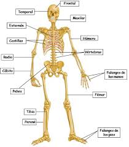

Sistema Oseo
Regresar
Un sistema es un conjunto de elementos que desarrollan interacciones y que se mantienen interrelacionados entre sí. En cuanto al término óseo, podemos decir que refiere a aquello vinculado a los huesos (las estructuras rígidas que componen el esqueleto de los animales vertebrados).